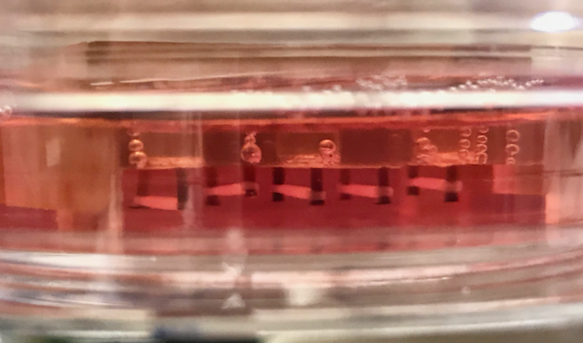
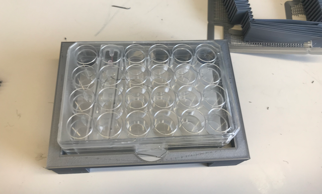

Cardiac Tissue Engineering
Costa Lab, Icahn School of Medicine at Mount Sinai
New York City, USA
Cell Culture
- Maintained and expanded:
- induced-Pluripotent Stem Cells (iPSCs)
- Mesenchymal Stem Cells (MSCs)
- Cardiac Progenitor Cells (CPCs)
- Differentiated iPSCs into cardiomycocytes.
Tissue Fabrication
- Fabricated 3-D human engineered cardiac tissues from iPSC-derived cardiomyocytes.
- Supplemented specific tissues with MSCs or CPCs depending on effect being studied.

Contractility Analysis
Video Adapted from Turnbull et al. The FASEB Journal (2014)
- Used LabView to capture both spontaneous and electrically stimulated contractions of the tissues.
- Analyzed tissue function using Matlab.
3-D Design and Printing
- Designed and printed 3-D accessories to help simplify and streamline the data collection process.
